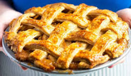

Apple Pie

Make a Better Pie than Grandma!
Few desserts say “fall in every bite” quite like this apple pie recipe. The perfect blend of tart and sweet flavor from an abundance of fresh apples, this easy apple pie is a classic dessert to complete any holiday spread!
A flaky, buttery pie crust generously filled with gently spiced apples alongside a big scoop of vanilla ice cream- it doesn’t get much more delicious than that. And this apple pie recipe is a festive, easy holiday dessert that’s perfect for fall!
Ingredients
- Pie Crusts
- Flour
- Cinnamon
- Butter
- Egg
- Apples
- Lemon
- Sugar
- Nutmeg
Instructions
- Pour fresh lemon juice over the apple slices and toss well to stop them from oxidizing (turning brown).
- Add granulated sugar, flour, cinnamon, and nutmeg. Stir so the apples are well coated.
- Lightly flour a clean surface in your kitchen and roll one disc of pie dough into a 12- to 14-inch circle. Grab a 9-inch pie dish and line it with the dough. Let the excess hang over the edge.
- Spoon the apple pie filling into the bottom crust (be generous!) and pat it gently into an even layer, allowing a slight mound to form in the center.
- Dot the filling with unsalted butter
- Roll the other disc of pie dough until it’s about ⅛-inch thick (a circle approximately 11 inches in diameter). Place the dough atop the filling. Trim the excess pie dough to an inch or so from the edge of the pie pan, tuck the excess under, and crimp the edges.
- Cut slits in the top crust to allow steam to escape as the pie bakes.
- Brush the pie crust with the egg wash. Place the pie dish on a rimmed baking sheet lined with either parchment paper or foil to make clean-up easier. Bake in a 425°F heated oven for 20 minutes before reducing the heat to 375°F. Bake for approximately 50 minutes to an hour more, until the crust is a beautiful golden brown and the apple pie filling is bubbly. Allow the pie to cool completely on a wire rack, which will take about 4 hours. Slice and enjoy!
For mor recipes click here!